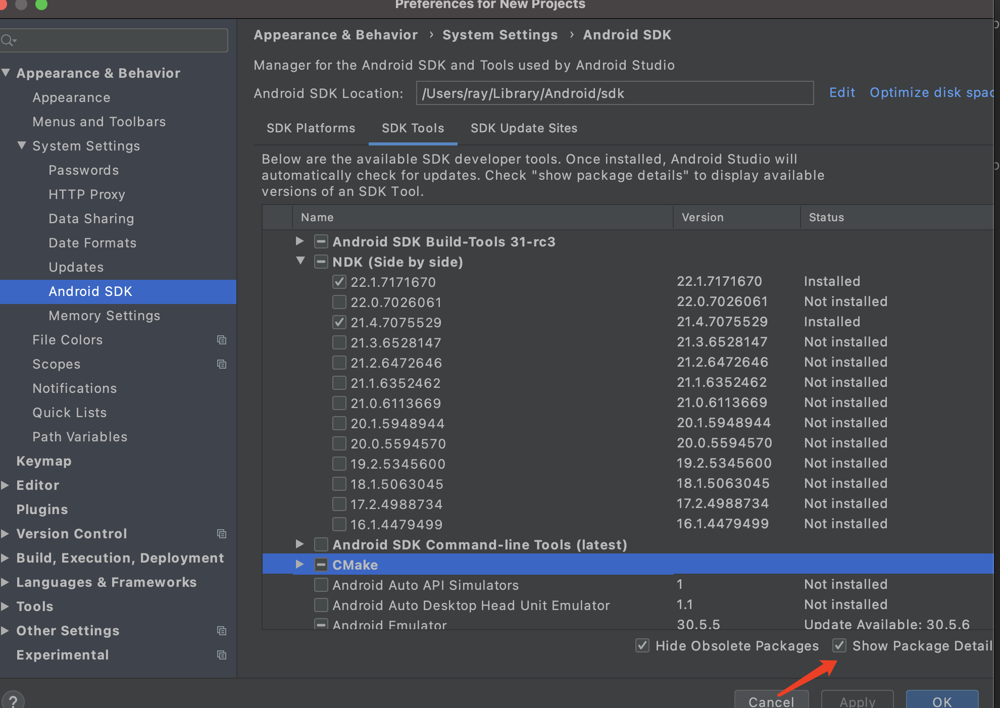
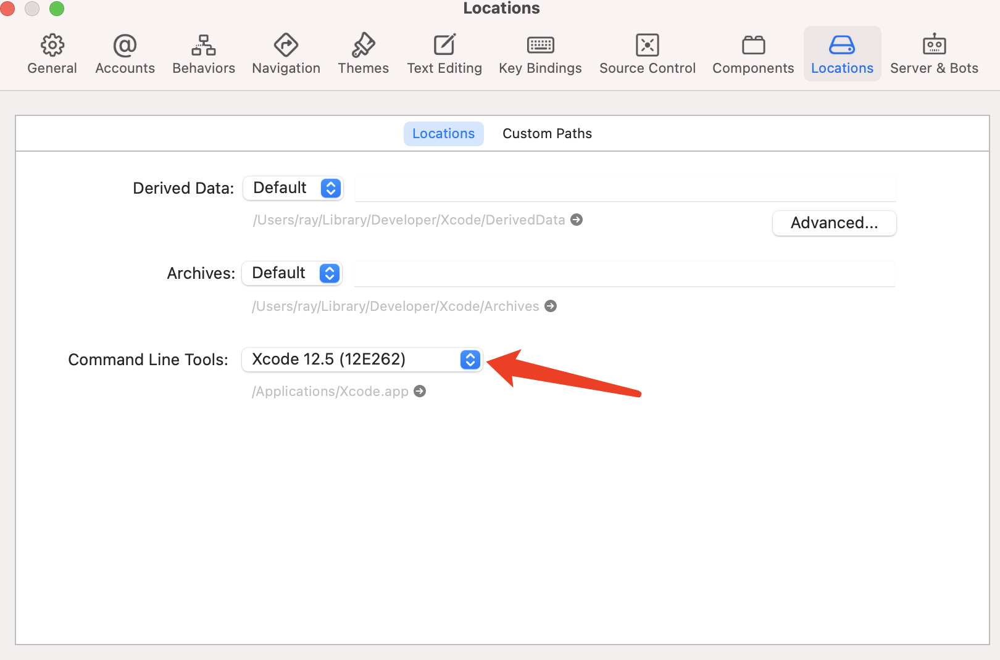

让 Go 代码跑上移动端
在一些特定的情况下，我们需要为移动端实现一些功能，如果为每一个移动端编写代码，不仅工作量大，而且很难维护。
我们使用的一个方案是编写 Go 代码，然后分别编译成不同平台的代码。Go 语言本身也提供了跨平台编译的方式，但是命令很复杂，需要配置很多参数，容易出错。目前有一些成熟的库可以直接使用，在这里使用的是 gomobile 框架。
本文使用的是 Go1.14，Go 语言的安装不再赘述。
gomobile 安装
gomobile 可以把 go 代码编译成移动端应用或者**移动端SDK，**本文演示的是编译成 SDK。
安装 gomobile：
1
go get golang.org/x/mobile/cmd/gomobile
安装不上的可以设置国内的 Go 代理：
1
go env -w GOPROXY=https://goproxy.cn,direct
go mobile 支持 Go Modules，所以不需要在 GOPATH 创建项目。创建了一个基于 Go Modules 的 hello 项目，其中只有一个文件 hello.go，具体代码如下：
1
2
3
4
5
6
7package hello
import "fmt"
func Hello(name string) string {
return fmt.Sprintf("Hello %s!", name)
}
Android 平台
安装 Android Studio，下载最新版本就可以。
通过 Android Studio 的 SDK manager 下载 NDK 和 CMake，选中右下角的 Show Package Details 可以下载特定版本。
gomobile 对 NDK 的兼容性不好，我测试了 NDK 22 及以上版本都会失败，本文使用的 NDK 版本为 21.4.7075529，CMake 下载最新版本就可以。

然后配置环境变量：
1
2export ANDROID_HOME=~/Library/Android/sdk
export ANDROID_NDK_HOME=~/Library/Android/sdk/ndk/21.4.7075529
然后在 hello 项目的上一级目录执行以下命令:
1
2# hello 是 go 项目的目录
$ gomobile bind -target=android hello
把 Go 代码编译成 SDK 使用的是 bind 命令。上面命名执行完成后，就会在产产生两个文件:
1
2hello.aar
hello-sources.jar
然后直接吧 hello.aar 导入 到 android studio 中使用，就可以像使用普通 Java 包一样来调用 hello 方法，这一步就不再演示了，调用代码如下：
1
2
3
4
5
6
7
8
9
10
11
12
13
14
15
16
17
18import hello.Hello;
public class MainActivity extends AppCompatActivity {
protected void onCreate(Bundle savedInstanceState) {
// 省略无关代码
fab.setOnClickListener(new View.OnClickListener() {
public void onClick(View view) {
// 在这里调用 hello 方法
Snackbar.make(view, Hello.hello("ray"), Snackbar.LENGTH_LONG)
.setAction("Action", null).show();
}
});
}
}
IOS 平台
编译到 IOS 平台的需要安装 XCode 和配套的 Command Line Tools，整个流程会比 Android 平台简单不少。
同样在项目的上级目录执行下面的命令：
1
2# hello 是 go 项目的目录
$ gomobile bind -target=ios hello
如果出现这个错误：
1
gomobile: -target=ios requires XCode
到 xcode 中配置一下 Command Line Tools：

上面的命令执行成功之后，就会在本地生成一个 Hello.FrameWork 目录，这个就是 IOS 平台上的依赖库。可以直接把整个目录拷贝到 IOS 的目录底下，然后添加到项目的依赖中，就可以在代码中使用了：
1
2
3
4
5
6
7struct ContentView: View {
var body: some View {
// 在这里调用 hello 方法
Text(HelloHello("ray"))
.padding()
}
}
小结
到这里，Go 代码在 Android 和 IOS 上都跑起来了，这个工具本质上还是对 Go 命令的封装。后续我会再写一篇文章来详细介绍 gomobile 的实现。
文 / Rayjun